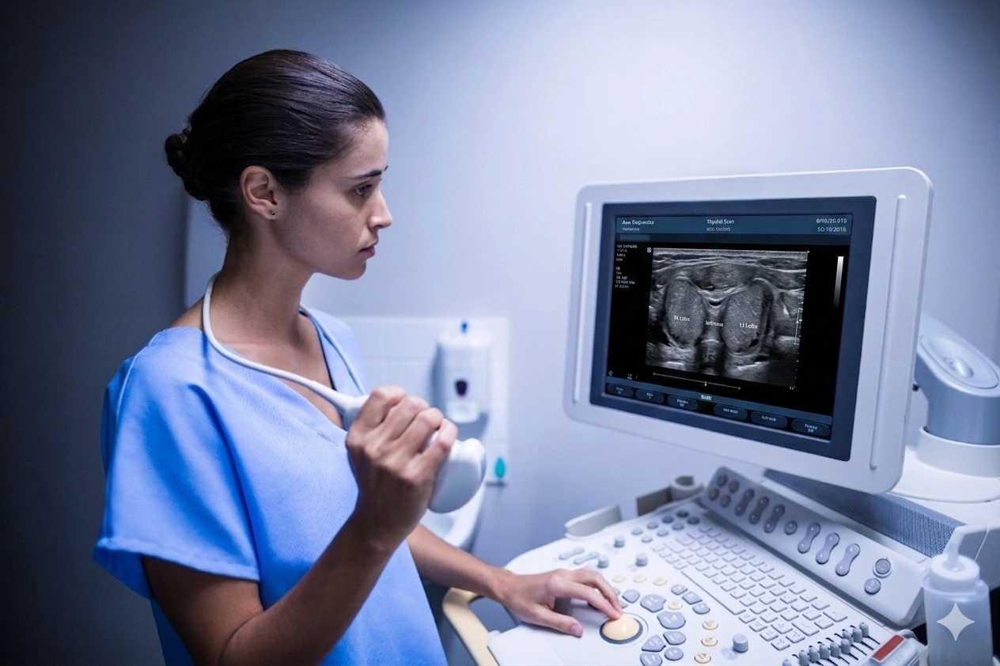

If your doctor has recommended a thyroid scan, you may be wondering what it checks and why it is needed. At Meera 4D Scans Madurai, we perform accurate, detailed thyroid ultrasound scans — giving you clear, reliable results with compassionate care.
What is a Thyroid Scan?
A thyroid scan is a specialised ultrasound imaging of the thyroid gland — a butterfly-shaped gland located at the front of your neck. The scan examines the size, shape, structure, and any abnormalities of the thyroid gland in detail. At Meera 4D Scans Madurai, we use high-resolution ultrasound technology to provide the most accurate thyroid assessment.
At Meera 4D Scans Madurai, our experienced sonologists perform thyroid scans using advanced ultrasound technology — delivering accurate, detailed results for every patient with compassionate care.
Why is Thyroid Scan Important?
A thyroid ultrasound scan is one of the most reliable diagnostic tools to assess thyroid health because:
- Detects thyroid nodules — lumps or swellings in the gland
- Identifies thyroid enlargement (goitre)
- Assesses thyroid cysts — fluid-filled sacs
- Screens for early signs of thyroid cancer
- Evaluates thyroid blood flow using Doppler
- Guides biopsy procedures when needed
- Monitors known thyroid conditions over time
When Should You Get a Thyroid Scan?
Your doctor at Meera 4D Scans Madurai may recommend a thyroid scan if you experience any of the following:
| Symptom / Condition | Why Thyroid Scan is Needed |
|---|---|
| Neck swelling or lump | Detect nodules or goitre |
| Unexplained weight gain or loss | Assess thyroid function |
| Fatigue and weakness | Rule out thyroid disorders |
| Abnormal thyroid blood test | Confirm and evaluate findings |
| Family history of thyroid disease | Early screening and detection |
| Difficulty swallowing | Check for thyroid enlargement |
| Pregnancy | Monitor thyroid health during pregnancy |
What Does Thyroid Scan Check?
- Thyroid Size — length, width, and volume of both lobes
- Thyroid Nodules — size, number, and characteristics
- Thyroid Texture — homogeneous or heterogeneous gland
- Cysts — fluid-filled vs solid lesions
- Blood Flow — Doppler assessment of vascularity
- Lymph Nodes — nearby neck lymph node assessment
- Isthmus — the connecting bridge between thyroid lobes
What is the Normal Size of Thyroid?
One of the most common questions asked at Meera 4D Scans Madurai is — what is the normal thyroid size on ultrasound?
| Measurement | Normal Range |
|---|---|
| Each lobe length | 4 – 6 cm |
| Each lobe width | 1.5 – 2 cm |
| Each lobe thickness | 1.5 – 2 cm |
| Total thyroid volume | 6 – 20 ml (adults) |
| Isthmus thickness | Less than 3 mm |
Important: A thyroid nodule smaller than 1 cm is usually not concerning. However, any nodule detected must be assessed by our specialist sonologists at Meera 4D Scans Madurai — size alone does not determine risk.
Conditions Detected by Thyroid Scan
- Goitre — enlarged thyroid gland
- Thyroid Nodules — solid or cystic lumps
- Hashimoto's Thyroiditis — autoimmune thyroid condition
- Graves' Disease — overactive thyroid
- Thyroid Cysts — fluid-filled sacs
- Thyroid Cancer — early malignancy detection
- Hypothyroidism / Hyperthyroidism — underactive or overactive thyroid

Is Thyroid Scan Safe?
- Completely safe — uses sound waves only
- No radiation — safe for all patients including pregnant women
- Non-invasive — no needles or discomfort
- Takes only 15 to 30 minutes
- Suitable for all age groups
What Happens During Your Thyroid Scan at Meera 4D Scans?
When you visit Meera 4D Scans Madurai for your thyroid scan, here is what to expect:
Arrival & Registration
You arrive at Meera 4D Scans Madurai and complete a quick, simple registration process.
Preparation
No special preparation is needed. You may be asked to remove any neck jewellery before the scan.
The Scan
You lie comfortably with your neck extended. Our sonologist applies gel on your neck and uses a small ultrasound probe to examine the thyroid gland.
Assessment
Size, texture, nodules, blood flow, and surrounding lymph nodes are carefully measured and documented by our expert team.
Same Day Results
At Meera 4D Scans, you receive your detailed thyroid scan report on the same day with clear findings and guidance.
How to Prepare for Thyroid Scan?
- No fasting required — eat and drink normally before your scan
- Remove neck jewellery — necklaces, chains before the scan
- Wear comfortable clothing — loose collar or open neck top
- Bring previous reports — any previous thyroid scans or blood test results
- Inform medications — tell our team about any thyroid medications you take
Why Choose Meera 4D Scans Madurai for Thyroid Scan?
Meera 4D Scans is Madurai's most trusted diagnostic centre. Here's why thousands of patients choose Meera 4D Scans Madurai for their thyroid scan:
- Advanced high-resolution ultrasound technology
- Experienced certified sonologists with diagnostic expertise
- Same day detailed reports — no waiting
- Colour Doppler thyroid assessment for complete evaluation
- Affordable, transparent pricing — no hidden charges
- Trusted by 10,000+ patients in Madurai
Useful Resources
These trusted health and medical resources provide additional information about thyroid health, thyroid scan, and diagnostic care.
-
WHO — Thyroid Disorders & Global Health World Health Organization information on thyroid disorders and public health guidelines.
-
National Health Portal India — Thyroid Disorders India's official health portal on thyroid conditions, symptoms, and diagnostic guidelines.
-
NCBI — Thyroid Ultrasound Research Peer-reviewed medical research on thyroid ultrasound imaging and diagnostic evaluation.